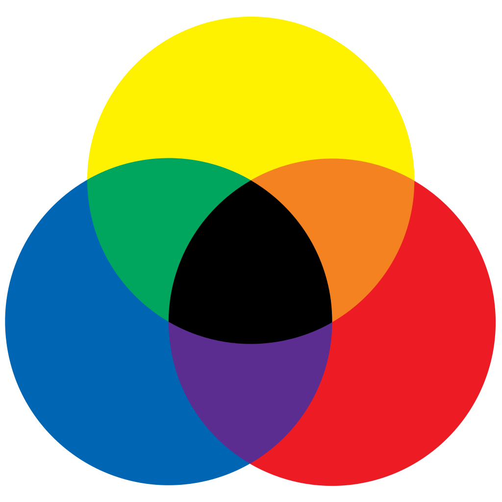
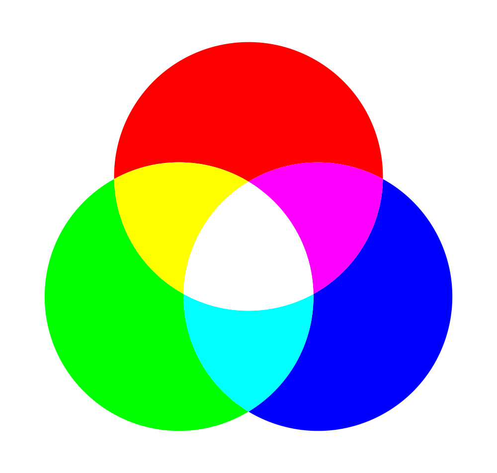
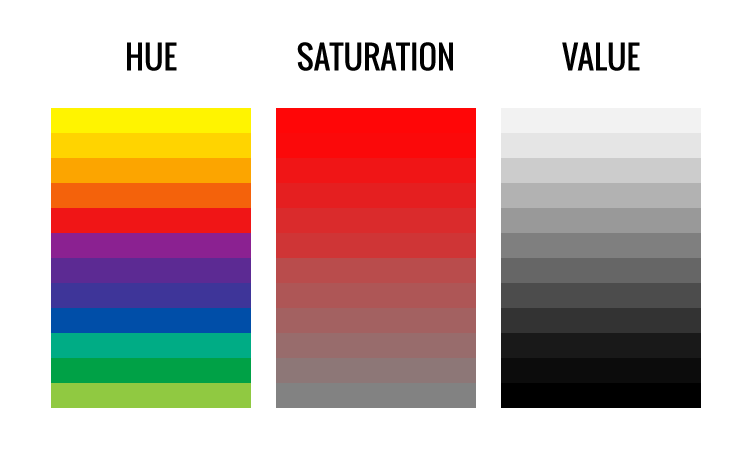
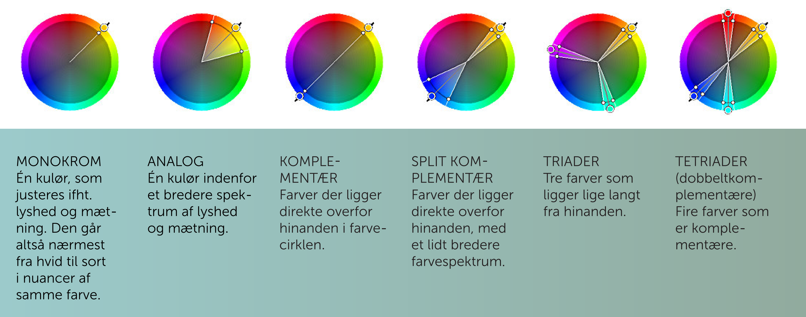

Farveteori
Farver er noget af det mest essentielle indenfor design. De er stemningsskabende, skaber identitet og så er de mange forskellige kombinationer et fantastisk ”værktøj”. At arbejde med farver er dog ikke en let sag, for der er mange forskellige faktorer, der spiller ind på et individs opfattelse af farver.
Først og fremmest har et individs kulturelle baggrund meget at sige om farvers betydning. I den vestlige verden er sort et symbol for død, men i Kina er hvid et symbol for samme. Ligeledes i Japan er blå et symbol for liv, og i Kina er det farven grøn. Den kulturelle opfattelse af farvers betydning skifter altså ganske gevaldigt verden over. Verdenshistorien fortæller også noget om farver, for hidtil eksisterede blå slet ikke som et ord i nogle kulturer. Et individs køn kan også spille ind på opfattelsen af farvers betydning. Mange mænd opfatter kvinder i rød som værende mere tiltrækkende end andre, mens kvinder ikke opfatter det samme om mænd klædt i rødt.
Det kan dog også diskuteres, om opfattelsen af farvers betydning alene er en subjektiv ting. Generelt i den vestlig verden er orange venlighedens farve, men hvis en person ikke bryder sig om orange, så vil farven ganske enkelt opfattes helt anderledes. Blandt andet er det medvirkende til, at farver kan være så svære at arbejde med.
Farvesystemer
Kort fortalt har farvesystemer til formål at kategorisere og klassificere farver, hvilket påvirker måden at blande farver på. Eksempelvis er farveblanding ved CMYK noget helt andet end ved RGB. Der findes altså flere former for farvesystemer.
RYB
RYB er farvesystemet, der benyttes af eksempelvis kunstnere, når de blander maling. RYB består af primærfarverne rød, blå og gul, der derved er farvesystemets primærfarver.
CMYK
CMYK er et farvesystem, der bruges indenfor trykverdenen. Det gælder altså alt fra den lille printer i hjemmet til store trykmaskine. Begrebet CMYK er en sammentrækning af cyan, magenta, yellow og key black, der er CMYKs primærfarver. Der er her tale om et subtraktivt farvesystem, hvilket vil sige, at farver trækker lys ud, og jo flere farver der blandes, jo mørkere end farve får man. Principielt set vil trykkerier være i stand til blot at trykke med cyan, magenta og yellow, men på en trykkerimaskine bliver et motiv skabt gennem lag. Først påføres sort og efterfølgende kommer cyan, magenta og yellow som den sidste farve. Uden den sorte farve vil resultatet være mere gråligt end sort, og derfor bruger trykkerimaskiner alle fire farver. Ved digital opsætning af en tryksag bliver CMYK-værdierne skrevet i procent, og skrives der eksempelvis 100 % cyan og 100 % magenta, men ingen yellow eller key black, vil resultatet være en tydeligt blå farve.

RGB
RGB er en sammentrækning af red, green og blue – eller bare rød, grøn og blå, og det er et farvesystem, der bruges indenfor digital farveblanding, og det bruges derfor udelukkende til digitale opgaver såsom farver på et website eller digitale illustrationer. Hver farve findes i 255 nuancer, og sammen skaber rød, grøn og blå mere end 16 millioner forskellige farver. Det er et additivt farvesystem, hvilket betyder, at farverne tilsammen skaber lysere og lysere farver. Den fulde mængde af både rød, grøn og blå vil derfor skabe en fuldstændig hvid farve. RGB kan angives på to forskellige måder. Enten kan man skrive (86, 0, 26) eller #56001a. De har nøjagtigt samme dybe vinrøde farve, men det er blot to forskellige måder at angive samme farve på.
#56001a kaldes en hex-kode, og den består af tre sæt eller par, der angiver farveintensiteten af hver farve. Hvert par strækker sig fra 00 til FF, hvor 00 er den mørkeste og FF den lyseste. I eksemplet med den vinrøde farve er farveintensiteten af rød 56, farveintensiteten af grøn er 00, og farveintensiteten af blå er 1a.
Pantone
Pantone er endnu et farvesystem, der bruges i trykbranchen. Reelt set hedder farvesystemet spot, og Pantone er en producent af farve, men Pantone er det mest benyttede, og derfor kaldes spotfarve ofte for Pantone. Forskellen mellem Pantone og CMYK er, at Pantone i bund og grund er specialfarver, der enten er meget svære at efterligne med CMYK, eller også er de ganske enkelt umulige at blande med CMYK. Det kan eksempelvis være metalliske farver eller fluorescerende.
HSV
Farver kan faktisk også beskrives på en helt tredje måde ved at benytte hue, saturation og lightness, der kan oversættes til nuance, mætning og lyshed. Hue angiver farvetonen, og derved bestemmer den, om der er tale om eksempelvis blå, gul eller lilla. Saturation angiver, hvor mættet farven er. Sagt på en anden måde vil en umættet gul i virkeligheden være sort, mens en fuldstændigt mættet gul vil rumme maksimalt mulig farve. Lightness angiver, hvor meget lys, der tilføres farven, og jo mere lys, jo lysere en farve.
Farveharmonier
Farver skabes på forskellig vis og sammensættes på forskellig vis og alle disse muligheder har hver især et begreb.
Primærfarver
Primærfarver er grundfarver, og det vil sige, at der er tale om rene farver, der ikke indeholder spor af andre, og hvert farvesystem har egne primærfarver. Eksempelvis er primærfarverne ved CMYK cyan, magenta, yellow og key black, mens primærfarverne hos RGB er rød, grøn og blå.
Sekundærfarver
Sekundærfarver skabes ved at blande to primære farver. Eksempelvis skaber lige mængder af primærfarverne rød og grøn i RGB-systemet farven gul.
Tertiærfarver
Tertiærfarver er resultatet af en primærfarve blandet med en sekundærfarve. I RGB vil lige mængder af primærfarven rød og sekundærfarven gul tilsammen skabe en orange farve.
Komplementærfarver
Komplementærfarver er to farver, der står overfor hinanden i farvehjulet. I RGB er blå og orange komplementærfarver, da de står modsat hinanden i farvehjulet. De er knapt så harmoniske sammen, men til gengæld tiltrækker de meget opmærksomhed.
Monokrome farver
Monokrome farver er samme farve, der eksempelvis tilføres mere lys eller mættes mindre.
Analoge farver
Analoge farver er nærtliggende farver i farvehjulet. Det giver et meget harmonisk udtryk, men det tiltrækker ikke meget opmærksomhed.
Triader
Triader er tre farver, der har samme afstand til hinanden i farvehjulet. Det kan eksempelvis være orange, violet og turkis.
Tetriader
Tetriader kaldes også dobbeltkomplementærfarver, og det er et ”sæt” komplementærfarver sammen med et andet ”sæt”.
